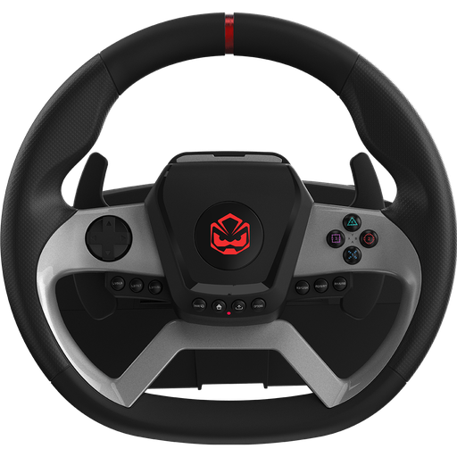

Controle de Volante & Force Feedback 3.2 Nm
Ajuste o ângulo de giro físico (até 1080°) e a potência dos motores duplos em Newtons-metro (Nm).
Ângulo Máximo de Rotação (Até 1080°)
Força do Motor (Escala em Nm)
Dinâmica de Forças Físicas & Efeitos de Pista
Calibração & Curvas dos Pedais Magnéticos Hall
Ajuste individual da sensibilidade e curvas não-lineares para Acelerador, Freio e Embreagem.
Selecionar Pedal para Ajuste
Pontos de Calibração (4 Estágios)
Módulo de Câmbio H-Pattern 6+1 & Borboletas
Diagnóstico da alavanca de 6 marchas, marcha ré com trava, chave de freio de mão e borboletas.
Recursos Exclusivos do Câmbio W270
Mapeamento dos 18 Botões do W270
Personalize as funções de cada botão do aro para encaixar perfeitamente no seu estilo de pilotagem.
Jogos & Simuladores
Perfis otimizados com torque (Nm) e guia rápido para cada jogo.
Telemetria ao Vivo & Medidor Dinâmico de Torque (Nm)
Acompanhe em tempo real a rotação física, a pressão dos pedais e os Newtons-metro aplicados pelos motores duplos de 3.2 Nm.

Sistema de Calibração PCYES W270
Calibre o centro 0.0° do volante, elimine desvios e ajuste o curso e zonas mortas dos pedais magnéticos Hall.
Calibração de Centro & Esterço (0.0°)
Alinhe o volante visualmente no centro reto e clique no botão abaixo para definir o zero absoluto no hardware e no sistema.
Calibração dos Pedais (Sensores Hall)
Verificação de Microswitches do Câmbio H-Shifter (6+1 com Ré)
Engate cada uma das marchas na alavanca manual para certificar o funcionamento e a resposta de cada posição do padrão H.